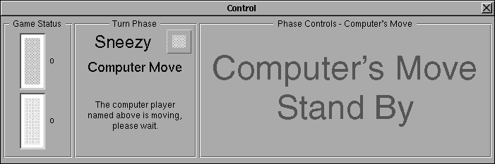
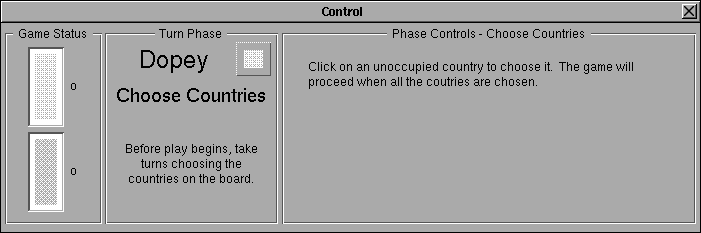
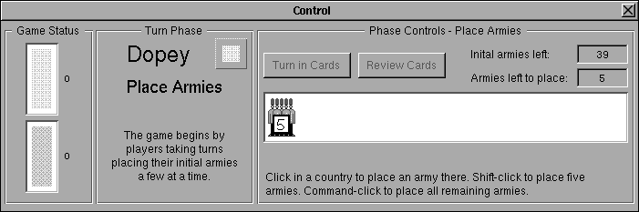
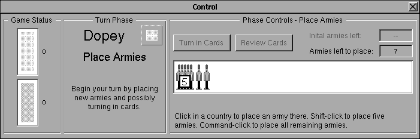
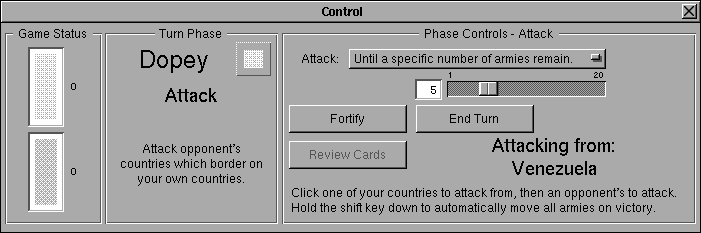
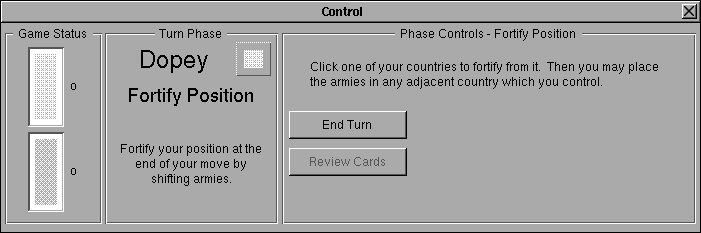
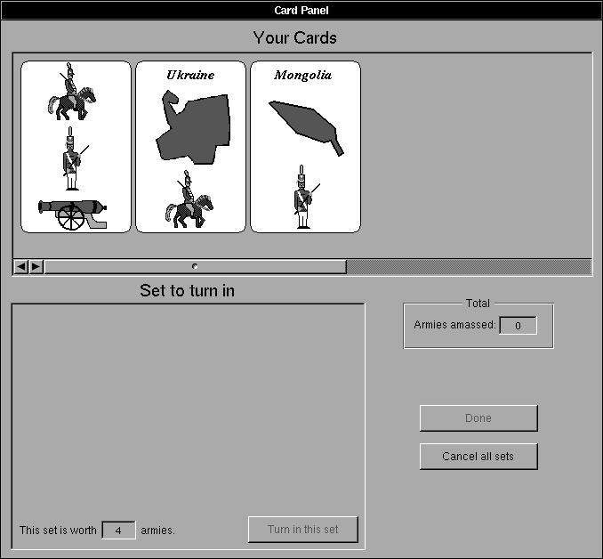

Risk
Play Interface Help
This section of the help deals with how to play Risk on the Next. It details the user interface of actual game play. For a discussion of the menus see MenuInterface.rtfd
Once you have chosen New Game... from the Game menu, set up your options, and accepted them, the game begins.
The Control Panel
The Control Panel has three sections. Two are always the same. The third changes for each phase of the turn. Below is shown the Control Panel as it is during a computer player's turn.

Control Panel during a computer player's turn
The Game Status box shows whose turn it is, what order the players will move by color. It consists of a vertical stack of boxes. There is one box for each player, and each player's box is filled with his color. The box on top belongs to the player whose turn it is, the next box down moves next, then the next, and so on. The number to the right of each player's box tells how many cards they have.
The Turn Phase box shows information about the player moving and what phase they are in. The player's name (Sneezy above) and color are displayed at the top. Next is the current phase (Computer Move is the phase through a computer player's entire turn), and below that is some explanatory text about the phase (The computer player is moving, please wait.)
The Phase Controls box changes through the various stages of a turn. While it is a computer player's turn, this box is always as it is above. The other phase controls are discussed in detail below.
The Initial Rounds
Choosing Countries
Before the regular play can begin, the countries must be distributed and initial armies must be placed. If the Player's Choose option is chosen then the players begin by choosing countries in turns one at a time until all the countries are occupied. Below is what the Control Panel looks like during these rounds.

Control Panel during a Choose Countries round
To choose a country, click on it in the map window.
Initial Army Placement
After the countries are distributed (randomly or by choosing), initial armies must be placed. Players take turns placing armies 1, 3, or 5 at a time according to the option chosen in the Setup Panel. Below is what the Control Panel looks like during the initial placement rounds.

Control Panel during an Initial Place Armies round
The two buttons are for dealing with cards. During the initial rounds these buttons are dimmed. The Initial armies left field shows how many initial armies you have left to place before regular play can begin. The Armies left to place field shows how many armies are left to place during this initial round. This value is also shown graphically in the army view in the middle of the phase controls.
To place one army in a country click the country. Shift-clicking a country places five armies, and command-clicking a country places all the armies remaining in the army view.
Regular Play
Once the countries have been distributed and all the players have placed all their initial armies, regular play begins. During regular play players take turns. Each turn is divided into three phases: placing armies, attacking, and fortifying.
Placing Armies
At the beginning of each turn the player is given a number of armies. (See the General help for how the number of armies is calculated.) The player must place these armies. Below is the Control Panel for placing armies.

Control Panel during a Place Armies phase
The two buttons are for reviewing and turning in Risk card sets. If the player have any cards, the Review Cards button is enabled. If the player have any sets of cards the Turn In Cards button is enabled. The Card Panel is discussed below, but if cards are turned in, the player gets more armies to place. Cards must be turned in during the place armies phase. If, at the beginning of a turn, the player has more than four cards, the Card Panel comes up and the player is forced to turn in sets of cards until they have four or less left.
The Initial armies left field is not relevant after the initial place armies rounds, and is dimmed. The view in the middle and the Armies left to place field both show how many armies are at the players disposal.
To place one army in a country click the country. Shift-clicking a country places five armies, and command-clicking a country places all the armies remaining in the army view.
Attacking
After the player has placed all their armies, the Control Panel changes to the attack phase.

Control Panel during an Attack phase
The Attack popup menu is used to control how long to sustain an attack. In one attack a maximum of two armies may be lost by the two countries involved. The options in the Attack menu allow the player to control how many times to attack for one click of the mouse. The four options are:
Once only.
A specific number of times.
Until a specific number of armies remain. (shown above)
Until unable to continue.
The middle two options use the number from the slider below the menu as a parameter. The first option attacks only once (holding the command key while attacking forces this option). The second option uses the sliders value to tell it how many times to attack at a maximum. The third option uses the sliders value to stop attacking when the number of armies left in the attacking country is equal to or below the value. The fourth option attacks until there is only one army left in the attacking country.
All of the options stop if the defending country is conquered or if the attacking country has only one army left.
To attack, first click the country to attack from, then click a neighboring country to attack. The Attacking From field shows the name of the country you are attacking from, and the map shows its border in the selected color (usually white). If the defending country is conquered, a certain number of the attacking armies are moved into the defending country to occupy it. One army is also left in the attacking country. If there are any armies left over, they are given to the player in a place army phase to put in either the attacking or defending countries (only). If the shift key is down when the player clicks the country to attack, and the attack is successful, all armies but one will be moved into the defending country and no place army phase will occur.
If the defending country is conquered, and that country was the last country occupied by another player, then that player is out of the game, and the attacking player gets all their cards. If this brings the total number of cards to more than four, the Card Panel (see below) is forced up, and the player must turn in sets until they have four or less cards left. (If a place armies phase from the attack was necessary it is performed before the Card Panel is brought up).
The Fortify button ends the attack phase and begins the fortify phase. The End Turn button skips the fortify phase and ends the current player's turn. It is not necessary to attack at all before ending the turn or fortifying. If the player has any cards, they can be reviewed with the Review Cards button.
Fortifying
After attacking the player can optionally fortify. The Control Panel for fortifying is shown below.

Control Panel during Fortify phase
Fortifying follows one of four rules as chosen from the Setup Panel. The different rules are discussed in the General Help, but the interface is the same for all the rules.
To fortify from a country click on it. All the armies in the country which are available for fortifying are given to the player in a place armies phase. The armies may only be placed in countries which conform to the rules for fortifying in effect.
If only one fortify is allowed (rules 1 and 2) then after the armies are placed, the current player's turn ends. If multiple fortifies are allowed (rules 3 and 4) then the player can continue to fortify.
The End Turn button ends the current player's turn. The Review Cards button allows the player to see their cards (including the card for this turn if one was earned).
Cards
Cards are reviewed and turned in through the card panel. All the Turn In Cards and Review Cards buttons in the different phases bring up the card panel.

The Card Panel
This is how the card panel looks when it first comes up. The scrolling box on the top shows all the cards in the player's hand. If the player occupies the countries associated with any cards, a little star is shown underneath those cards. Extra armies are awarded for sets which have cards whose countries are occupied by the player when the player turns them in.
To make a set in the lower box, click on the three cards to turn in. As the cards are clicked, they are copied down to the lower box and they are turned over in the upper box. Once three cards which make a set are shown in the lower box, the Turn in this set button becomes enabled. Also in the lower box is a field which shows how many armies the next set turned in is worth (not counting bonus armies for occupying the countries of the cards). When the turn in button is pressed, the cards are turned in, and the armies accumulated are moved to the Armies amassed field. If there are more sets the player wants to turn in, they can be turned in as well. The Armies amassed field keeps a total of the armies awarded. At any time the player can cancel turning in cards with the cancel button (unless the panel was forced on screen because the current player had more than four cards. When all the desired sets are turned in, the panel is dismissed with the Done button. The armies are given to the player for placement, and two armies are put in each country which was on a card turned in and also occupied by the player.
If the panel comes up from a Review Cards button, nothing but the Cancel all sets button works.